El tema de la cuarta práctica tiene importancia ambos en las matemáticas puras y en ciencias aplicadas como por ejemplo la ciencia de materiales. Tomamos de un espacio bidimensional una zona con medidas conocidas que contiene $k$ puntos semilla $p_i$, representados por sus coordenadas $(x_i, y_i)$. Lo que se busca es dividir esa zona en regiones llamadas celdas de Voronoi de tal forma que todos los puntos que pertenecen a la región de $p_i$ estén más cerca de esa semilla que a cualquier otra.
El modelo matemático en sí es contínuo, es decir, las coordenadas son números reales, pero nosotros lo vamos a discretizar en esta práctica. Vamos a representar la zona por una matriz $n \times n$ y las coordenadas serán entonces números enteros en $[1, n]$. Por el momento, vamos a colocar uniformemente al azar las $k$ semillas, representadas por los números $1$ a $k$ dentro de la matriz, procurando que ocupen una posición distinta dentro de la matríz cada una de las semillas. También vamos a visualizar cómo se ve la zona con las semillas puestas.
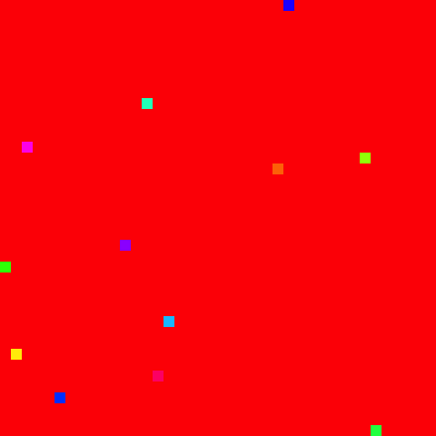 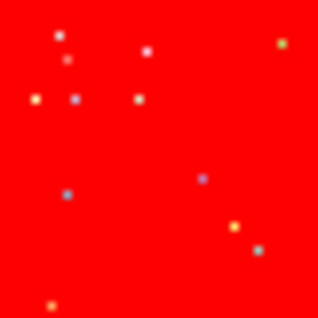Lo que ahora falta para recuperar las celdas de Voronoi es determinar para todos aquellos elementos que siguen valiendo cero a cuál semilla se van a asociar. Para no entrar en detalle a algoritmos elegantes, vamos a simplemente paralelizar para cada elemento un cómputo sencillo: para cada posición que vale cero, calcula para cada semilla la distancia euclideana entre las coordenadas de la semilla y las de la posición en cuestión; regresa como resultado la semilla que resultó ser la más cercana. De esta forma podemos calcular a partir de la matriz de las semillas una que representa la celdas.
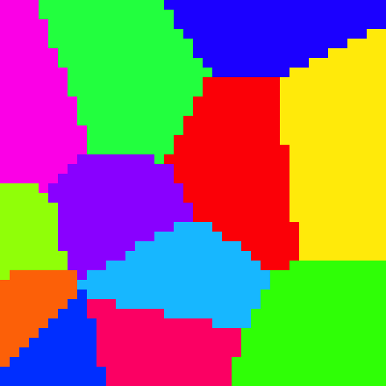Ahora, supongamos que las celdas representan núcleos en algún proceso de cristalización en un material y vamos a provocar una grieta en ese material. Supongamos también que una grieta propaga con mayor facilidad a lo largo de una frontera de una celda y con mayor dificultad en el interior de una celda. Denotemos con $p_f$ la probabilidad de propagación a lo largo de una frontera y con $p_i$ la propagación en el interior. Vamos a también suponer que la grieta siempre propagará por una frontera cuando esta posibilidad existe. Vamos a suponer, por simplicidad, que la propagación no tiene ninguna dirección preferencial, aunque el asunto no es así de simple en el mundo verdadero. Vamos a seleccionar una posición inicial para la grieta $(x, y)$ al azar y estudiar su propagación. Vamos a suponer que siempre al proceder al interior de una celda, la propagación se va dificultando gradualmente si no se logra a regresar a una frontera.
$ Rscript fracture.R
Min. 1st Qu. Median Mean 3rd Qu. Max.
2.00 11.00 19.00 28.26 38.00 188.00
$ python3 fracture.py
DescribeResult(nobs=200, minmax=(4, 520), mean=103.44, variance=7542.669748743719, skewness=1.4435942087025952, kurtosis=2.622393753248889)
Algunos ejemplos de grietas resultantes:
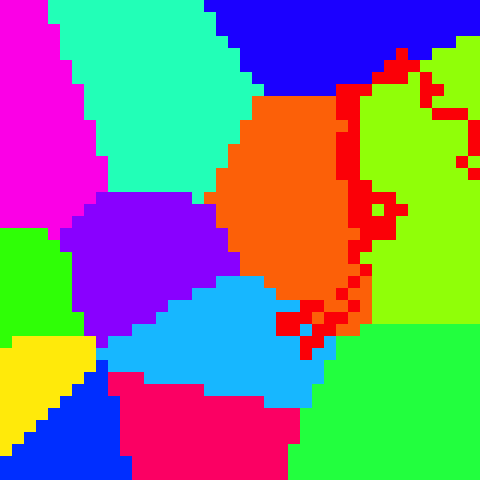 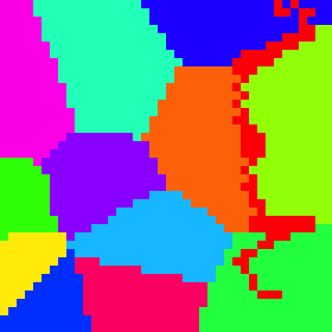 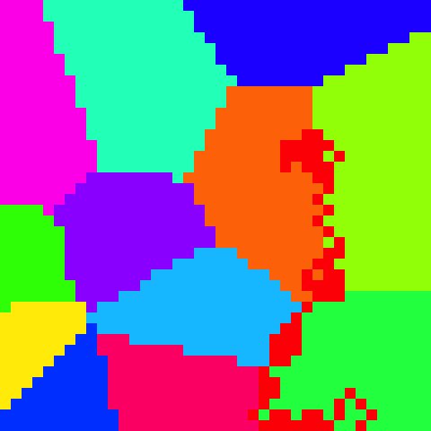 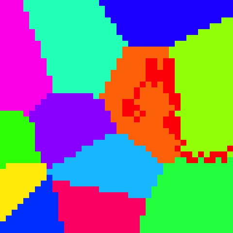 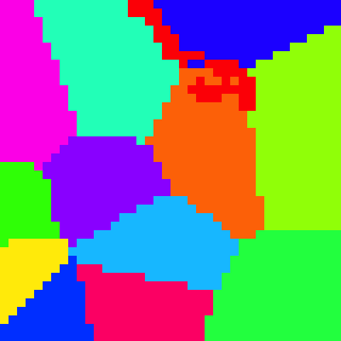 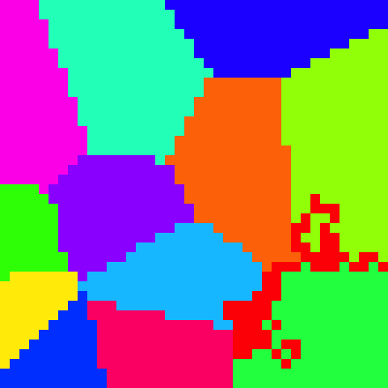Examina el efecto del número de semillas $k$, manteniendo constante el tamaño de la zona $n$, en la penetración de las grietas que se forman en términos de la mayor distancia Manhattan entre la grieta y el exterior de la pieza, visualizando los resultados con diagramas caja-bijote o similar sobre las réplicas y aplicando métodos estadísticos para establecer el efecto tiene, si es que tenga, $k$ en ello.
El primer reto es crecer las celdas dinámicamente alrededor de semillas de tal forma que las semillas aparecen al azar en distintas iteraciones y crecen con una tasa exponencialmente distribuida (variable entre núcleos pero constante para un núcleo específico) hasta toparse con las demás celdas, así como se muestra en la animación. Examina los cambios producidos en el fenómeno de propagación de grietas que esta nueva forma de crear las celdas provoca, ya que las semillas resultan en celdas de tamaños distintos según su edad y su tasa, además del efecto de la posición relativa a las demas semillas.
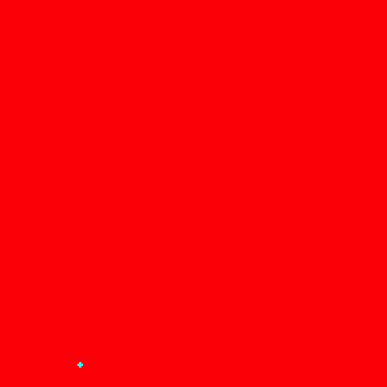En el segundo reto, el crecimiento ya no es determinista sino probabilista, como para modelar fenómenos como cáncer: un núcleo propaga a vecinos desocupados con una probabilidad $p_v$. Si un núcleo no logra crecer, se muere con una probabilidad $p_m$.
En el ejemplo abajo, $p_v = 0.1$ y $p_m = 1.0$ — investiga la probabilidad que los núcleos (los tumores) ocupen el espacio completo (órgano) en función de $p_v$ y $p_m$.
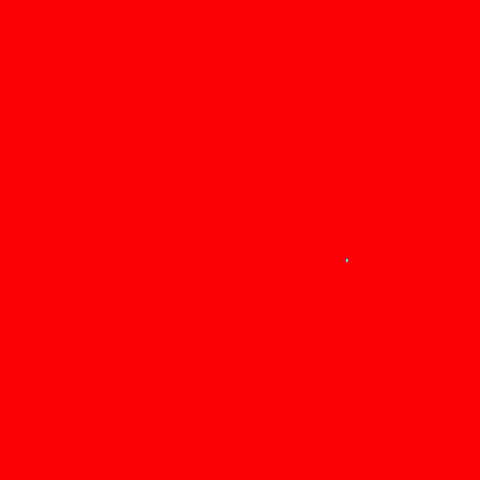https://satuelisa.github.io/simulation/p4.html